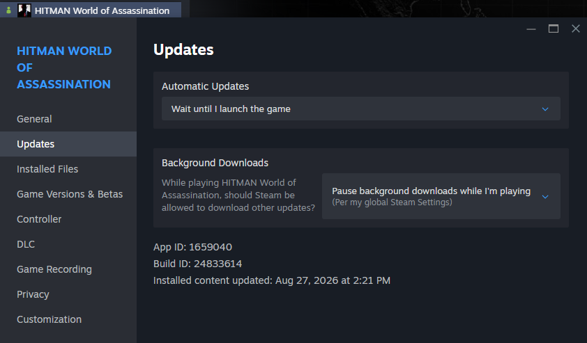
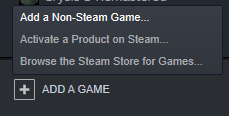
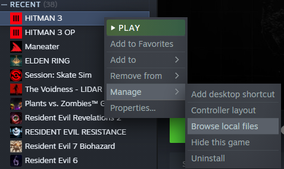
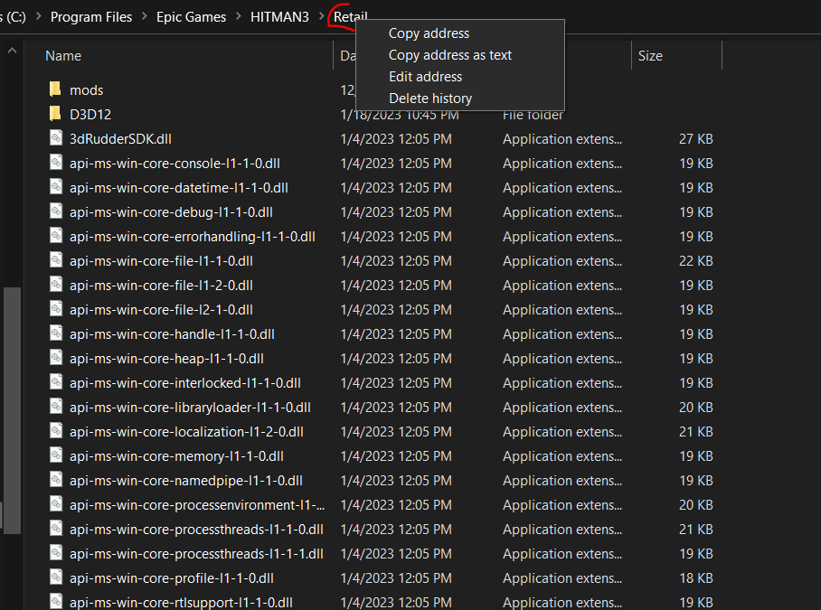
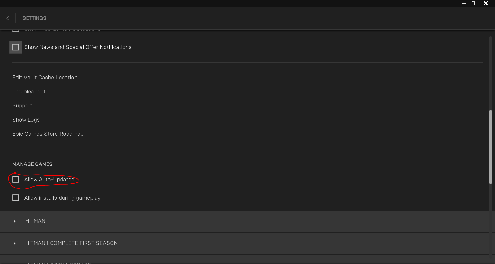

What is downpatching?
Downpatching refers to installing an older version of a game to utilize features that are not present in the current version of the game.
For Hitman, its uses include the ability to do things like strafing, molotov accident kills, and generally playing on a stable version of the game to ensure that strategies remain working regardless of the changes IOI makes to the game.
This works on Windows as well as Linux using Wine / Steam Proton. The ability to downpatch is also restricted to PC, namely the Steam and Epic Games platforms.
Important information
SRC submissions allow you to play on all patches excluding those from the first year of the game's release (3.10.0 - 3.70.0), this means you are allowed to submit runs on any patch from 3.100 to current.
As of version 3.230.1, the entitlements were updated, this means that game versions older than this will need a compatible version of Peacock to play the game. The version of Peacock that should work with patch 3.230.0 and older is v8.2.0, while the latest version will work with v3.230.1 and up, as well as the official servers for the game.
Notable patches
If you do not know where to start and you would like to run trilogy, patch 3.230.1 is recommended for its access to strafing, all of the latest strategies, and generally less RNG for said strategies. For individual level runs in general, patch 3.230.1 is again recommended because of the convenience of being able to be used with official servers, but certain levels like Miami and Mumbai would be better served by going further back. Below is a table detailing some notable changes to help you choose a patch to play on.
| Tech | Versions |
|---|---|
| Strafing | Pre 3.240 |
| Subdue Boosting | Pre 3.240 |
| Miami FPS Wall | Pre 3.150.1 |
| Instinct Shooting Delay | Pre 3.150.1 |
| Vanya Wallbang | Pre 3.150.1? |
| RFID Exit | Pre 3.130 |
| Molotov Accident Kill | 3.100 to 3.120 Officially introduced in 3.120, available in 3.100 to 3.120 |
Downpatching instructions
Steam
Video walkthrough
Currently this video does not utilize the .bat file technique and references the need to install dotnet but i left it here for a placeholder
-
https://youtu.be/5mg3dFQyFkI
- Credits: Solder
Text instructions
Setup
-
Create a folder on your computer for where you would like to download the game
- Example:
C:\HitmanDownpatch
- Example:
-
Install Steam DepotDownloader from here:
https://github.com/SteamRE/DepotDownloader/releases/latest
(download the zip for your operating system, e.g.
DepotDownloader-windows-x64.zipon Windows orDepotDownloader-linux-x64.zipon Linux, then unzip it to the folder you just created) -
Download the downpatch script for your OS and put it in the folder you just created:
- Windows: Hitman WoA Downpatch.bat
-
Linux:
hitman-woa-downpatch.sh
(then in a terminal in that folder run
chmod +x hitman-woa-downpatch.sh)
-
If you plan to patch the files of your original game install to save disk space,
right click Hitman WoA in your Steam Library > Properties > Updates > Wait
until I launch the game
- This will prevent Steam from trying to auto-update the game (in theory)
- This may not stop Steam from updating to a new version of the game when IOI releases one, and you may need to downpatch again
-
Screenshot for Reference

{kind=link}
Downpatch instructions
- For the next step, refer to the table below to check the manifest ID's. Alternatively you could use SteamDB or the spreadsheet mentioned at the table below.
-
Copy the manifest ID of the patch you would like to download, then run the script
in the folder you just created:
- Windows: open Hitman WoA Downpatch.bat, paste the manifest ID using right click, then press enter.
-
Linux: run
./hitman-woa-downpatch.sh, paste the manifest ID, then press enter.
-
Afterwards you will be prompted to put in your steam username and password, if you have any additional 2FA
enabled, you will also need to fill that in.
-
After DepotDownloader finishes downloading, you're free to either add it to
steam as a non-steam game, or overwrite your main game install's files:
-
If you want to keep both the current game install and the downpatched versions,
you can simply add the game to steam as a non-steam game by clicking
ADD A GAME on the bottom left of your steam client, clicking
Browse on the window that pops up, and locating the
folder you just installed the game to, selecting HITMAN3.exe, and adding the game to
steam.

-
If you want to replace your current install game files with the downpatched
version to save file space on your system, open your original install (Steam
> Hitman > Settings > Manage > Browse Local Files) and drag the contents
of the folder you just installed it in to there.

-
If you want to keep both the current game install and the downpatched versions,
you can simply add the game to steam as a non-steam game by clicking
ADD A GAME on the bottom left of your steam client, clicking
Browse on the window that pops up, and locating the
folder you just installed the game to, selecting HITMAN3.exe, and adding the game to
steam.
- Unlike with Epic, you can launch the downpatched game as normal through the official Steam client as you normally would.
Authentication issues
If the .bat / .sh DepotDownloader method fails to log in, you can download the same depot through Steam itself instead.
-
Open the Steam console using a browser or the Windows Run dialog (Win + R) by going to
steam://open/console, or in Steam click the console tab if you already have it enabled. -
Run
download_depot 1659040 1659041 <MANIFEST_ID>using the same Steam manifest ID from the patch table.-
Steam will download the files into a folder it creates, usually under
steamapps\content\app_1659040\depot_1659041inside your Steam install.
-
Steam will download the files into a folder it creates, usually under
- Add that download as a non-steam game, or overwrite your original game files, in the same way mentioned above.
-
If opening the game then fails with a “Failed to initialize Steam” error,
create (or download this file)
named
steam_appid.txtin the Retail folder and put only the text of1659040in it.
Epic
Video walkthrough
Text instructions
Command line stuff / prereqs
- Just know the very basics
-
Right click folder in Windows Explorer > Copy address as text
-
Screenshot for Reference

-
Screenshot for Reference
-
Type
cd <DIRECTORY_ADDRESS>into your command line / terminal to navigate to that directory in the command line-
<ALLCAPS>in the below documentation should be understood as a stand-in value for your actual credentials / files, please substitute with the correct capitalization, and without angled brackets unless otherwise indicated.
-
- Right click to paste into terminal / command line
-
If for some reason a directory has a space in it (e.g.
C:\Program Files...), then please surround it with single quotes for any command line arguments, e.g.cd 'C:\Program Files...', or it won't work
{kind=link}
Setup
-
Create a folder on your computer for where you would like to download the game
- Example:
C:\HitmanDownpatch
- Example:
- Legendary is essentially a modded game launcher for Epic that will allow you to downpatch
-
Install Legendary from here:
https://github.com/derrod/legendary/releases/latest
(just download
legendary.exeif on Windows, and put it in the folder you just created. On linux remember to usechmod +xon your legendary file, so you can execute the application.) - See this document on more information on how to install Hitman WoA with Legendary specifically: https://github.com/solderq35/hitman-tech-tips/blob/main/misc/h3legendary.md
- General Legendary documentation: https://github.com/derrod/legendary/blob/master/README.md
-
Before proceeding further, open the official Epic Games Launcher, click profile
picture in upper right, then go to Settings > Manage Games > Uncheck "Allow
Auto Updates". Otherwise, the game will update itself to the latest version
automatically again if you ever open the Epic Games launcher later for any reason.
-
Screenshot for Reference

-
Screenshot for Reference
{kind=link}
Downpatch instructions
- For the next steps, refer to the table below for specific patch manifests. Download the manifest you want.
-
In Terminal / Command Line, navigate to the folder you just created with
cd <INSTALL_LOCATION>, e.g.cd C:\HitmanDownpatch -
Run the following commands. All of the following except
legendary launchshould only have to be completed once per downpatch:legendary auth-
legendary install Eider --manifest <WHERE_YOU_INSTALLED_MANIFEST>-
EXAMPLE INPUT (with my filepath):
legendary install Eider --manifest C:\Users\Legion\Downloads\Eider_Windows_6041891.manifest -
Eideris a "code name" so to speak for Hitman WoA in Epic / Legendary - If you get asked if you want to install offline or if you want to install DLC's, say yes.
-
You might get 403 errors on the download; the Epic / Legendary servers
aren't very stable for downloading. Either wait it out, or hit
Ctrl Cto cancel the download and try again.
-
EXAMPLE INPUT (with my filepath):
legendary verify Eider-
legendary repair Eider-
The two commands above of
verifyandrepairare needed because often times, at least a few downloaded files will be corrupted. Your game will not launch if files are corrupted, so you should verify and repair always after installing the downpatch files.
-
The two commands above of
-
legendary launch Eider --skip-version-check-
The
--skip-version-checkargument is needed on a downpatched game, or it won't launch. - NOTE: You can ONLY use legendary to launch the downpatched version on Epic. The official Epic Games Launcher won't let you launch the game when downpatched!
-
The
Patch table
- Manifest ID's alternative reference spreadsheet: https://docs.google.com/spreadsheets/d/184r93nFFBFc8Z45QkJotKkKUl24XNH_pKMLxdHohhd8/edit?gid=1909790271#gid=1909790271
| Manifest name / download | Release date | Game version | Official patch notes | Patch note commentary |
|---|
Banned patches
|
Eider 4446006 (Epic)
|
20-Jan-2021 | 3.10.0 | - First Patch - Prompts UI is messed up (ON DOWNPATCHED VERSION, it was fine back in the day) - (Fixed February 2021) |
|
|
Eider 4466613 (Epic)
|
21-Jan-2021 | 3.10.0 (OBS Hotfix - Assumed version number) | - First Patch variant - Prompts UI is messed up (ON DOWNPATCHED VERSION, it was fine back in the day) - (Fixed February 2021) |
|
|
Eider 4472392 (Epic)
|
23-Jan-2021 | 3.10.0 (Another hotfix?) | - First Patch variant - Prompts UI is messed up (ON DOWNPATCHED VERSION, it was fine back in the day) - (Fixed February 2021) |
|
|
Eider 4564176 (Epic)
|
23-Feb-2021 | 3.11.0 | https://www.ioi.dk/hitman-3-february-patch-3-11/ | - Removed Druzhina
wallbang - Removed Train OOB - Removed Berlin Manhole Exit - Removed a Chongqing Vault Skip - Weird downpatch prompt issue fixed |
|
Eider 4635444 (Epic)
|
30-Mar-2021 | 3.20.0 | https://www.ioi.dk/hitman-3-march-patch-3-20/ | |
|
Eider 4685799 (Epic)
|
6-Apr-2021 | 3.20.0 | https://www.ioi.dk/patch-notes-hitman3/ | - Check "April 6 - PC Only" in official patch notes. Fixed a frame rate issue. |
|
Eider 4763566 (Epic)
|
10-May-2021 | 3.30.0 | https://www.ioi.dk/hitman-3-may-patch-3-30/ | - Emetic Patch
(sick
NPC throw up elsewhere) - Legal Sniper Accident in Mendoza (Gaucho Start) patched in Mendoza. Also some lighting fixes. |
|
Eider 4879673 (Epic)
|
15-Jun-2021 | 3.40.0 | https://www.ioi.dk/hitman-3-june-patch-3-40/ | |
|
Eider 4916414 (Epic)
|
23-Jun-2021 | 3.40.0 | https://www.ioi.dk/patch-notes-hitman3/ | - Check "June 21 - PC Only" in official patch notes. Fixed an issue with Epic Overlay |
|
Eider 5010755 (Epic)
|
27-Jul-2021 | 3.50.0 | https://www.ioi.dk/hitman-3-july-patch-3-50/ | - Added Dartmoor game show |
|
Eider 5086890 (Epic)
|
31-Aug-2021 | 3.50.0 | https://www.ioi.dk/patch-notes-hitman3/ | - Check "August 31 - PC Only" in official patch notes. Fixed an issue where players experienced FPS drops/ stuttering after the 3.50 (July) patch. |
|
Eider 5191698 (Epic)
|
28-Sep-2021 | 3.70.0 | https://www.ioi.dk/hitman-3-september-patch-3-70/ | - Added back shoulder swap - Tweaked sniper slowdown to be more responsive |
|
Eider 5220846 (Epic)
|
1-Oct-2021 | 3.70.0 | https://www.ioi.dk/patch-notes-hitman3/ | - Check "October 1 - PC Only" in official patch notes. Fixed "No “Woosh” sound on PC. |
|
Eider 5259620 (Epic)
|
26-Oct-2021 | 3.70.0 |
| Allowed patches | ||||
|
Eider
5527099 (Epic)3902189938284110581
(Steam)
|
20-Jan-2022 | 3.100 | https://www.ioi.dk/hitman-3-year-2-patch-notes/ | - Year 2 Patch. - Removed Dartmoor SA 37 chandy wallbang - Messed up sliding doors - First patch available to Steam users. - First patch Molotov seems to be available. |
|
Eider
5540627 (Epic)3616963494886024195
(Steam)
|
21-Jan-2022 | 3.100 | https://www.ioi.dk/hitman-3-year-2-patch-notes/ | - Year 2 variant. |
|
Eider
5561401 (Epic)8924469489751784366
(Steam)
|
31-Jan-2022 (Maybe) | 3.100 | https://www.ioi.dk/hitman-3-year-2-patch-notes/ | - Year 2 variant. - No extra cameras in Master difficulty Dubai yet. - May 19th according to featured contract thumbnails |
|
Eider
5898594 (Epic)2244167751737065138
(Steam)
|
24-May-2022 or later | 3.110 | https://www.ioi.dk/hitman-3-year-2-may-patch-notes | - S3 Master
Cameras
Patch - Added invisible floor to Mendoza sliding roof - Most recent ET Arcade dates to 2022-Jul-14 |
|
Eider
5915918 (Epic)
|
24-May-2022 or later | 3.110 | https://www.ioi.dk/hitman-3-year-2-may-patch-notes | - S3 Master
Cameras
Patch - Added invisible floor to Mendoza sliding roof - Most recent ET Arcade dates to 2022-Jul-14 |
|
Eider
6041891 (Epic)1587269672222714171
(Steam)
|
26-Jul-2022 | 3.120 | https://www.ioi.dk/hitman-3-july-patch-notes/ | - Added Molotov. - Technically not the only patch with Molly playable - Fixed (some) Haven viewcone wallhacks |
|
Eider
6239328 (Epic)182129136748469362
(Steam)
|
6-Oct-2022 | 3.130 | https://www.ioi.dk/hitman-3-october-patch-notes/ | - Removed molly accident /
wallbang - Changed NY frisk - Check the new Frisk skip - Changed Dartmoor ledge drop - Check the new Dartmoor Ledge Drop - Removed RFID exploit |
|
Eider
6519315 (Epic)8905605137959754095
(Steam)
|
26-Jan-2023 | 3.140 | https://ioi.dk/hitman/patch-notes/january-patch-notes | - Removed Particle Boosts
(will
return in a later patch allegedly) - Red Tie Kiwi (notable for being the only unlockable item listed here), Apple, Soap, Apricot, Flower Pot still work for boosting. - Introduced Freelancer Game Mode - Removed (this version of) Dartmoor Ledge Drop - Kalmer and Sieker no longer share ammo |
|
Eider
6782587 (Epic)8964670781144179508
(Steam)
|
11-May-2023 | 3.150.1 | https://ioi.dk/hitman/patch-notes/2023/hitman-woa-may-patch-notes | - Particle Boosts returned to
previous state - Input delay added for shooting while in Instinct mode - Short Video Demo (0:00 to 0:25 is on current patch, 0:25 to end is on old patch) - More in depth video (read description) - NPC's drop items immediately after getting hit by tranq darts now - First Person Camera Glitch has been removed - Puddles electrocute more reliably now - Miami 15-30s strat is now more FPS dependent, need high FPS to kill Sierra reliably - Preliminary findings: ~35% success on 120 FPS ~50% success on 190 FPS - Backup Strat (~35s) |
|
Eider
6984506 (Epic)413982561460909428
(Steam)
|
17-Aug-2023 | 3.160 | https://ioi.dk/hitman/patch-notes/2023/hitman-woa-august-patch-notes | - Removed Dartmoor Ledge Drop
(again) - Dropping Chloroform is now illegal (both Freelancer and normal mode) - Alt F4 is no longer banned in Hitman Freelancer - Some audio distractions in and around the trophy room in Dartmoor can no longer be heard by NPC's. Examples: - This distraction outside of room - These panic shots at start of run (Rebecca panic lure) - Shooting this door |
|
Eider
7255037 (Epic)583463383929905977
(Steam)
|
31-Oct-2023 | 3.170.1 | https://ioi.dk/hitman/patch-notes/2023/hitman-woa-october-patch-notes | - See list of bug fixes |
|
Eider
7628109 (Epic)2691824735524352346
(Steam)
|
21-Mar-2024 | 3.180 | https://ioi.dk/hitman/patch-notes/2024/hitman-woa-march-patch-notes | - See list of bug fixes |
|
Eider
7836435 (Epic)3342871334266827735
(Steam)
|
27-Jun-2024 | 3.190 | https://ioi.dk/hitman/patch-notes/2024/hitman-woa-june-patch-notes | - See list of bug fixes |
|
Eider
8054457 (Epic)1304651127213885772
(Steam)
|
12-Sep-2024 | 3.200 | https://ioi.dk/hitman/patch-notes/2024/hitman-woa-september-2024-patch-notes-1 | - See list of bug fixes |
|
Eider
8338779 (Epic)3369603310032422544
(Steam)
|
12-Dec-2024 | 3.210.1 | https://ioi.dk/hitman/patch-notes/2024/hitman-woa-december-2024-patch-notes | - See list of bug fixes |
|
Eider
8385130 (Epic)1007177791479719056
(Steam)
|
20-Dec-2024 | 3.210.2 | https://ioi.dk/hitman/patch-notes/2024/hitman-woa-december-2024-patch-notes | - See list of bug fixes |
|
Eider
8619160 (Epic)8600814998895655653
(Steam)
|
27-Mar-2025 | 3.220.0 | https://ioi.dk/hitman/patch-notes/2025/hitman-woa-march-2025-patch-notes | - See list of bug fixes |
|
Eider
8717556 (Epic)2672127975667806282
(Steam)
|
10-Apr-2025 | 3.220.2 | https://ioi.dk/hitman/patch-notes/2025/hitman-woa-ps-vr2-patch-notes-1 | - See list of bug
fixes - PSVR2 introduced. (Same as pc in 3.240.1) |
|
Eider
8867373 (Epic)6711704740148543453
(Steam)
|
06-Jun-2025 | 3.230.0 | https://ioi.dk/hitman/patch-notes/2025/season-of-high-stakes-3-230-0-2025 | - See list of bug
fixes - Added Banker ET. |
|
Eider
9122428 (Epic)3672902092979765206
(Steam)
|
06-Jun-2025 | 3.230.1 | https://ioi.dk/hitman/patch-notes/2025/hitman-woa-nintendo-switch-2-patch-notes-august-26th-2025 | - See
list of bug fixes First Switch 2 patch. Prepping for iOS release. (Note: These have very different physics as the main game, and are treated on separate leaderboards.) |
|
Eider
9242611 (Epic)8609847986114318815
(Steam)
|
25-Sep-2025 | 3.240.1 | https://ioi.dk/hitman/patch-notes/2025/season-of-the-dragon-3-240-0-2025-september-25-hitman-woa | - See
list of bug fixes - Subdue Boosts patched. (Prompt gets removed when turning around) - Newspaper no longer KO's when thrown - PSVR2 Changes ported over to PC - Added Infiltrator ET. - Changed The Banker lockdown behaviour |
|
Eider 9383409 (Epic)4291319238449960041 (Steam)
|
30-Oct-2025 | 3.240.3 | https://ioi.dk/hitman/patch-notes/2025/game-update-3-240-3 | - See the list of bug fixes |
|
Eider 9476200 (Epic)9210823321173687524 (Steam)
|
01-Dec-2025 | 3.250 | https://ioi.dk/hitman/patch-notes/2025/game-update-3-250 | - See the
list of bug
fixes - Added Reflection ET. |
|
Eider 9753792 (Epic)3082065360189430621 (Steam)
|
25-Feb-2026 | 3.260.1 | https://ioi.dk/hitman/patch-notes/2026/game-update-3-260-1 | - See the
list of bug
fixes - Added Harbinger ET. |
|
Eider 10212273 (Epic)5604189710016205281 (Steam)
|
06-Jun-2026 | 3.270.0 | https://ioi.dk/hitman/patch-notes/2026/game-update-3-270 | - See the
list of bug
fixes - Added Wizard ET. |
|
Eider 10269511 (Epic)8577875111335820028 (Steam)
|
12-Jun-2026 | 3.270.1 | https://ioi.dk/hitman/patch-notes/2026/game-update-3-270-1 | - See the list of bug fixes |
|
Eider 10546568 (Epic)5408453574472182733 (Steam)
|
27-Aug-2026 | 3.280 | https://ioi.dk/hitman/patch-notes/2026/game-update-3-280 | - See the
list of bug
fixes - Added Herbalist ET. - Guard behaviour changes. |
{kind=link}
ZHM compatibility table
- For instructions on installing the SDK, refer to the official documentation.
- To my knowledge, the SDK is not backwards compatible, so ex. a newer SDK version like v4.0.2 will not work with patch 3.230.1.
-
Even with the correct version of the SDK, the included mods could still
prevent the game from booting, if you encounter this, look at the
ZHMModLoader.logto see which mods are causing the crash, and then remove them from the mods folder. - The patch ranges below were inferred from the ZHM release notes so they could be wrong please do inform a hitman moderator if you find any issues here.
Misc info
-
Both Steam Depot Downloader and Legendary require you to own the game on Steam or Epic
respectively to download the required files.
- Note that the free Steam Demo of Hitman WoA lets you download all the patch files, although you may not be able to do much with them, as explained below.
- The manifest files provided / linked require you to own the game on Steam / Epic to play the game with. Piracy is not condoned.
- In general, any edition of Hitman WoA actually has you install all the game files, buying DLC just unlocks access. No matter what DLC you own, downpatching will similarly give you all game files. But you might not be able to play all of it if you don't own access to them.
-
The downpatched files from Steam and Epic are mostly but not completely compatible
with each other. Any files ending with
.rpkgare cross-platform. However, theLauncher.exeandHitman3.exewill only work on the platform they are designed for.-
Due to an inability to get earlier versions of the
.exefiles from Steam Depot Downloader, Steam Hitman WoA is probably locked onto versions of January 2022 or later.
-
Due to an inability to get earlier versions of the
-
"Downpatching" Hitman WoA with the following methods is not true downpatching like you
will see in other games.
- The game server will remain the current version, which can cause some strange interactions (more on this later).
- Technically you can use an older game version along with an older version of Peacock, but this would mainly just help you avoid some visual bugs. Also some older versions of Peacock are not archived publicly.
- Generally speaking the current game server is fine for our purposes on patch 3.230.1 and after.
-
Some items or missions from later patches are available on earlier patches. Here are
some general guidelines regarding compatibility (non-exhaustive list, do not take as
universal truths)
-
A suit / item with messed up name but with a thumbnail (insert screenshot later)
will work if equipped.
- In general, a missing thumbnail indicates that an item is unusable on that patch. If you equip it, it will not show up in inventory after you are loaded in (for item), or you will not be wearing it (for suit).
-
A mission (main mission, contract, escalation, etc) will work even if the
thumbnail is gone and name is messed up.
- However, a mission that says "Get Access" will not work
-
In general, some items are internally introduced to the game's servers before they
officially become available in a patch. In a downpatched game state, you can
access some items earlier than you should be able to (with fully working
thumbnails and normal item name).
- For instance, Molotov can be accessed in the downpatch state as far back as January 2022 (with non-glitched UI / thumbnail), although it was only introduced to the game officially in July 2022.
- Because of this, while the official game patch notes / roadmaps are a good guideline for when an item would be available, it is not 100% correct.
- In general, you can unlock items on an older patch. As long as the mission / item involved are playable (following guidelines above), it should work. Even if the item has messed up name and the challenge name UI is also messed up, it will unlock. When you return to current patch, you will retain that unlock you completed on old patch.
-
You will not lose progress, mastery, or challenge completion by downpatching, in
general.
- Exception: Some items / missions will be unplayable, or simply not there on older patches. In this case, your new patch unlocks won't carry over. See guidelines above.
-
A suit / item with messed up name but with a thumbnail (insert screenshot later)
will work if equipped.
Acknowledgements
- Thank you to Solder for the original site this was based off of as a lot of information was directly copied from that.
- Thank you to Notex for providing the latest manifest files.
-
I would also like to include the original acknowledgements from the original site:
- Thank you Notex for sharing the Legendary manifest files (Legendary manifests are only generated if you played the game on that patch, so you would have to have played the game on every patch on Legendary since launch to have them all otherwise), and also giving valuable advice on this topic
- Thank you Tinosaurus for troubleshooting this process with me as well, and creating a video tutorial for Epic / Legendary downpatching
- Thank you Legendary and Steam Depot Downloader once again for making this possible